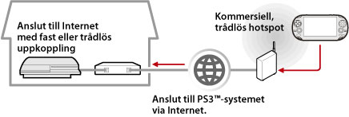

Nätverk > Använda fjärruppspelning (via Internet)
Använda fjärruppspelning (via Internet)
För att använda denna funktion på ett PS Vita-system eller PSP™-system, kan det hända att du måste uppdatera systemprogramvaran i PS3™-systemet och PS Vita-systemet eller PSP™-systemet.
Med hjälp av en enhet som stöder fjärrspel, exempelvis PS Vita-system eller PSP™-systemet och en trådlös åtkomstpunkt kan du ansluta ditt PS3™-system via Internet. För att kunna använda fjärrspel, måste PS3™-systemet vara inställt i standbyläge för fjärrspel.

Tips!
Metoden och kostnaden för en kommersiell, trådlös hotspottjänst (trådlöst lokalt nätverk) varierar mellan olika leverantörer. Kontakta leverantören för mer information.
Förberedelse (1) (PS3™-systemet och den enhet som stöder fjärrspel)
För att kunna använda fjärrspel för första gången måste du registrera (koppla ihop) den enhet som har stöd för fjärrspel, exempelvis ett PS Vita- eller PSP™-system, med PS3™-systemet. Välj  (Inställningar) >
(Inställningar) >  (Inställningar för fjärrspel) > [Registrera enhet] för att registrera (koppla ihop) systemet.
(Inställningar för fjärrspel) > [Registrera enhet] för att registrera (koppla ihop) systemet.
Förberedelse (2) (enhet som stöder fjärrspel)
Skapa en nätverksanslutning för att ansluta PS Vita eller PSP™-systemet till en åtkomstpunkt. För att använda fjärrspelning via Internet kan du använda en trådlös åtkomstpunkt. För mer information om nätverksinställningar på en enhet som stöder fjärrspel, se bruksanvisningen som medföljer enheten.
Använda fjärrspel på ett PS Vita-system
1. |
Välj |
|---|
 (Nätverk) >
(Nätverk) >  (fjärrspel) på PS3™-systemet.
(fjärrspel) på PS3™-systemet.2. |
På ditt PS Vita-system pekar du på |
|---|
 (PS3-fjärrspel) > [Start].
(PS3-fjärrspel) > [Start].3. |
Peka på [Anslut via Internet]. |
|---|
Tips!
- Om du går till skärmbilden för ett annat program under fjärrspelning stängs anslutningen till fjärrspelet ner efter 30 sekunder.
- På ditt PS Vita-system länkar du Sony Entertainment Network-kontot som används på PS3™-systemet. Om du skapat ett konto på PS Vita-systemet eller en dator kan du också använda det kontot på PS3™-systemet.
Använda fjärrspel på ett PSP™-system
1. |
Välj |
|---|---|
2. |
Välj |
3. |
Välj [Anslut via Internet]. |
4. |
Välj den anslutning för åtkomstpunkten som ska användas för fjärrspel från listan över anslutningar. |
5. |
Ange inloggnings-ID och lösenord för Sony Entertainment Network-kontot som används. |
 (Fjärrspel) på PSP™-systemet.
(Fjärrspel) på PSP™-systemet.Använda fjärruppspelning via Internet
Du kan eventuellt inte använda fjärruppspelning via Internet, beroende på vilken nätverksenhet som används. Kontrollera följande information om detta händer.
- Använd [Test av Internet-anslutning] för
 (Nätverksinställningar) under (Inställningar) för att kontrollera att PSP™-systemet kan ansluta till Internet och PSNSM.
(Nätverksinställningar) under (Inställningar) för att kontrollera att PSP™-systemet kan ansluta till Internet och PSNSM. - Om den router som används har stöd för UPnP ska routerns UPnP-funktion aktiveras.
- Om den router som används inte har stöd för UPnP, måste du ställa in routerns port så att den vidarebefordrar kommunikationen, så att den når PS3™-systemet via Internet. Det portnummer som används av fjärruppspelningen är TCP:9293. Mer information om hur detta alternativ ställs in finns i de anvisningarna som levererades med din router.
- Vidarebefordrande port är en funktion som skickar signaler som ankommer till en specifik port (entré), vidare till en annan specifik port (utgång). Detta kallas också "portmappning" eller "adresskonvertering".
- Om PS3™-systemet är anslutet till Internet via två eller fler routrar, kan det hända att kommunikationen inte fungerar.
Tips!
- En router är en enhet som gör det möjligt för flera enheter att dela på en enda Internetlinje.
- Kommunikationen kan vara begränsad beroende på de säkerhetsfunktioner som routern och Internetleverantören erbjuder. Läs de anvisningar som levererades tillsammans med den aktuella nätverksenheten, samt det material som kommer från Internetleverantören.